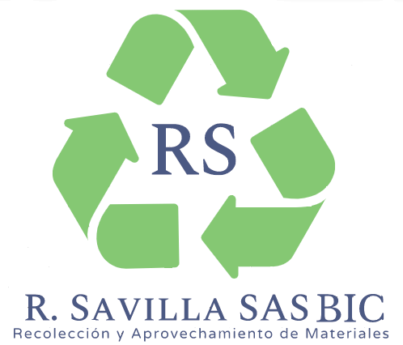

<div class="background">
  <main class="flex flex-column gap-2 relative w-full py-3 px-4">
    <div class="flex align-self-start">
      <h1 class="white-space-nowrap">¿Quiénes Somos?</h1>
    </div>
    <p class="body-copy">
      R Savilla SAS es una sociedad por acciones simplificadas matriculada el
      martes 15 de marzo de 2016 en la cámara de comercio de Bogotá. Esta
      empresa se dedica principalmente a comercio al por mayor de desperdicios,
      desechos y chatarra.
    </p>
    
    <div class="relative w-full py-4">
      <div class="img-logo">
        
      </div>
      <div class="grid-columns">
        <div class="flex flex-column gap-2 align-items-center">
          <h1>Misión</h1>
          <p class="body-copy">
            Contribuir en la recuperación de la madera y afines, aportando en
            la preservación del medio ambiente y los recursos naturales,
            realizando y ejecutando proyectos que surjan desde un pensamiento
            ecológico y sostenible, en beneficio de las personas y el entorno,
            de manera normativa, con calidad y ambiente de familia.
          </p>
        </div>
        <div class="flex flex-column gap-2 align-items-center">
          <h1>Visión</h1>
          <p class="body-copy">
            Ser una empresa sostenible en la recuperación y nuevo uso de la
            madera y afines, preocupada por conservar el ambiente, con
            desarrollo económico, construyendo una conciencia humanista y
            ambientalista, que reconozca la obra de Dios en el cuidado del
            planeta.
          </p>
        </div>
      </div>
    </div>

    <div>
      <h1>Principios y Valores</h1>
    </div>
    <p class="body-copy">
      Nuestros principios y valores definen quienes somos, en lo que pensamos,
      para saber cómo debemos interactuar con nuestro equipo de trabajo y
      clientes. · Ambiente familiar · Servicio · Lealtad y transparencia ·
      Cuidado del medio ambiente
    </p>

    <div class="flex-1 paginator-container">
      <div class="w-full flex flex-row justify-content-center">
        
      </div>
      <p-paginator
        class="paginator"
        [first]="first"
        [rows]="1"
        [totalRecords]="totalRecords"
        (onPageChange)="onPageChange($event)"
        [showJumpToPageDropdown]="true"
        [showPageLinks]="false"
        currentPageReportTemplate="{first} de {totalRecords}"
      ></p-paginator>
    </div>
  </main>
</div>
